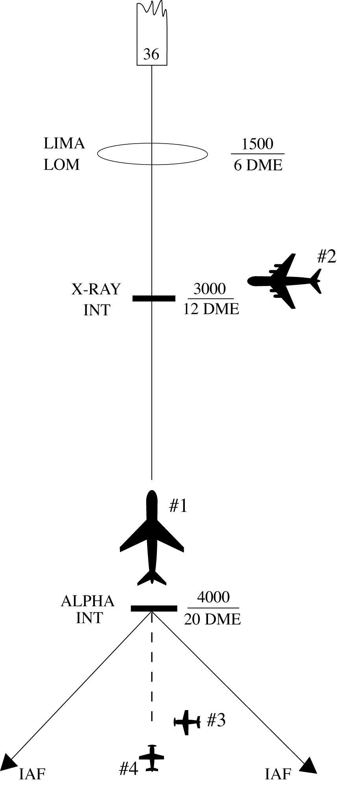
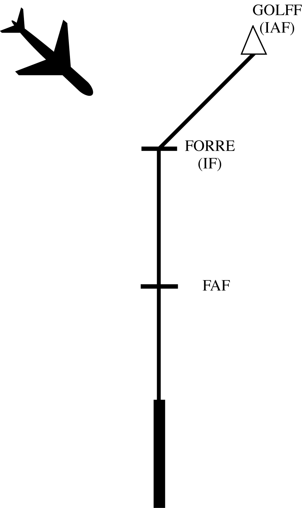
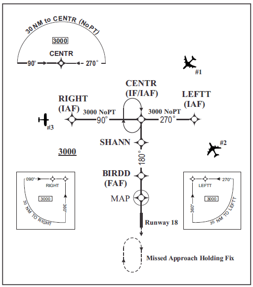
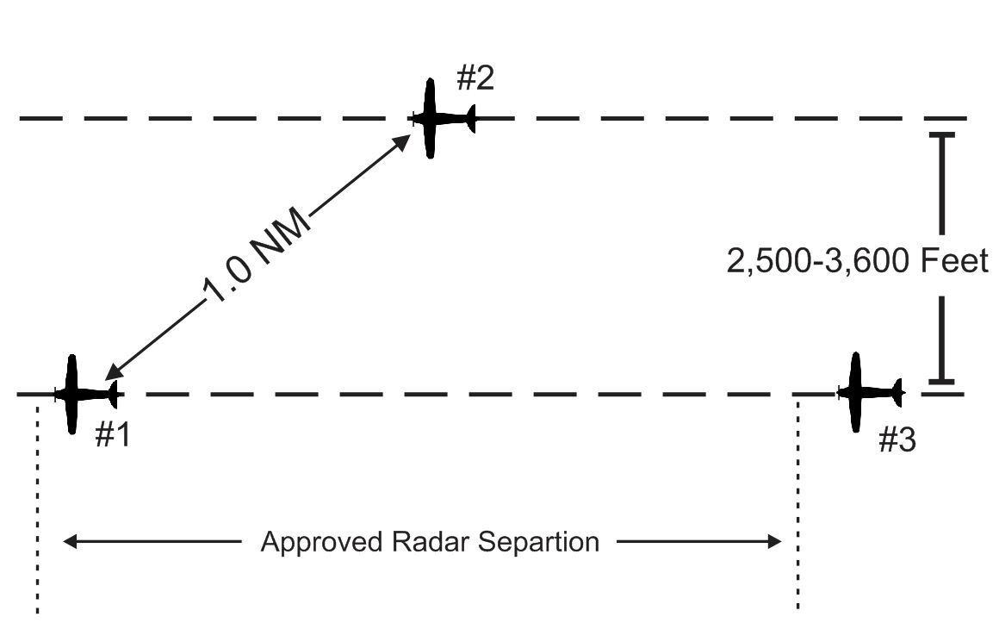
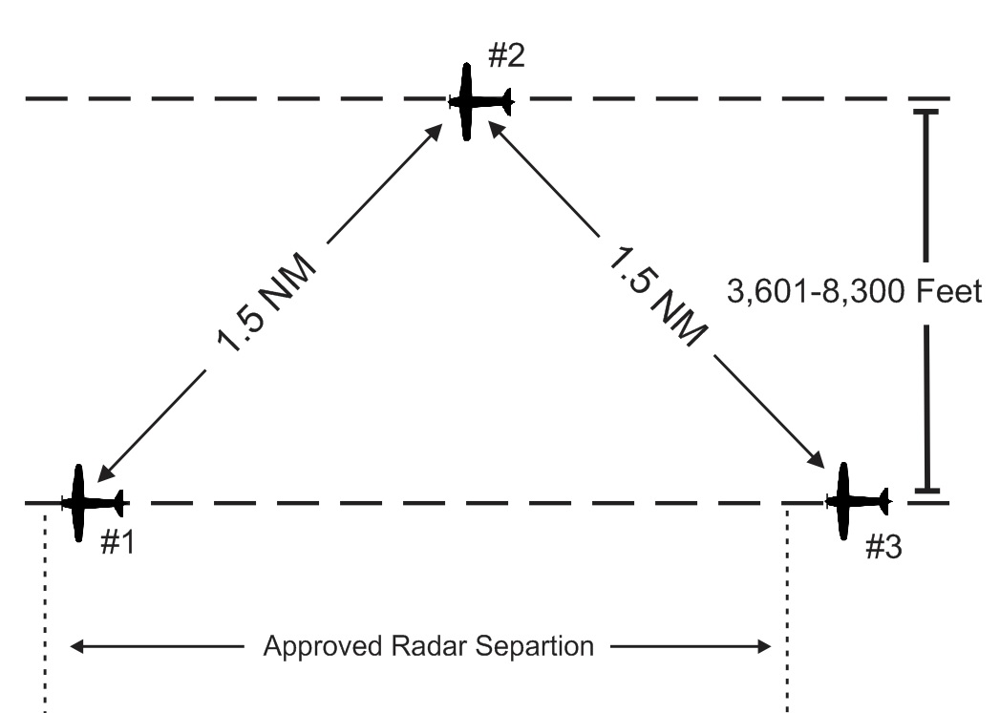
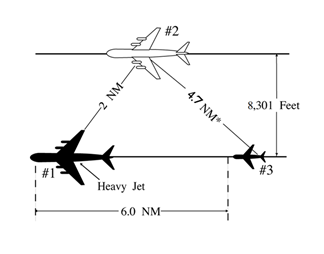

Chapter 5. Radar
Section 9. Radar Arrivals
5-9-1. VECTORS TO FINAL APPROACH COURSE
Except as provided in paragraph 7-4-2, Vectors for Visual Approach, vector arriving aircraft to intercept the final approach course:
- At least 2 miles outside the approach gate unless one of the following exists:
- When the reported ceiling is at least 500 feet above the MVA/MIA and the visibility is at least 3 miles (report may be a PIREP if no weather is reported for the airport), aircraft may be vectored to intercept the final approach course closer than 2 miles outside the approach gate but no closer than the approach gate.
- If specifically requested by the pilot, aircraft may be vectored to intercept the final approach course inside the approach gate but no closer than the final approach fix.
EXCEPTION. Conditions 1 and 2 above do not apply to RNAV aircraft being vectored for a GPS or RNAV approach.
- Provide a minimum of 1,000 feet vertical separation between aircraft on opposite base legs unless another form of approved separation is established during turn-on to final approach.
- For a precision approach, at an altitude not above the glideslope/glidepath or below the minimum glideslope intercept altitude specified on the approach procedure chart.
- For a nonprecision approach, at an altitude which will allow descent in accordance with the published procedure.
- EN ROUTE. The following provisions are required before an aircraft may be vectored to the final approach course:
- The approach gate and a line (solid or broken), depicting the final approach course starting at or passing through the approach gate and extending away from the airport, be displayed on the radar scope; for a precision approach, the line length must extend at least the maximum range of the localizer; for a nonprecision approach, the line length must extend at least 10 NM outside the approach gate; and
- The maximum range selected on the radar display is 150 NM; or
- An adjacent radar display is set at 125 NM or less, configured for the approach in use, and is utilized for the vector to the final approach course.
- If unable to comply with subparagraphs 1, 2, or 3 above, issue the clearance in accordance with paragraph 4-8-1, Approach Clearance.
5-9-2. FINAL APPROACH COURSE INTERCEPTION
- Assign headings that will permit final approach course interception on a track that does not exceed the interception angles specified in TBL 5-9-1.
TBL 5-9-1Approach Course Interception Angle Distance from interception point to approach gate
Maximum interception angle
Less than 2 miles or triple simultaneous approaches in use
20 degrees
2 miles or more
30 degrees
(45 degrees for helicopters) - If deviations from the final approach course are observed after initial course interception, apply the following:
- Outside the approach gate: apply procedures in accordance with subparagraph a, if necessary, vector the aircraft for another approach.
- Inside the approach gate: inform the pilot of the aircraft's position and ask intentions.
- EN ROUTE. When using a radar scope range above 125 NM, the controller must solicit and receive a pilot report that the aircraft is established on the final approach course. If the pilot has not reported established by the final approach gate, inform the pilot of his/her observed position and ask intentions.
5-9-3. VECTORS ACROSS FINAL APPROACH COURSE
Inform the aircraft whenever a vector will take it across the final approach course and state the reason for such action.
5-9-4. ARRIVAL INSTRUCTIONS
Issue all of the following to an aircraft before it reaches the approach gate:
- Position relative to a fix on the final approach course. If none is portrayed on the radar display or if none is prescribed in the procedure, issue position information relative to the navigation aid which provides final approach guidance or relative to the airport.
- Vector to intercept the final approach course if required.
- Approach clearance except when conducting a radar approach. Issue approach clearance only after the aircraft is:
- Established on a segment of a published route or instrument approach procedure, or see FIG 5-9-1 Example 1.
FIG 5-9-1Arrival Instructions 
- Assigned an altitude to maintain until the aircraft is established on a segment of a published route or instrument approach procedure.
FIG 5-9-2Arrival Instructions 
- Established on a segment of a published route or instrument approach procedure, or see FIG 5-9-1 Example 1.
- Instructions to do one of the following:
- Monitor local control frequency, reporting to the tower when over the approach fix.
- Contact the tower on local control frequency.
- Contact the final controller on the appropriate frequency if radar service will be provided on final on a different frequency.
- When radar is used to establish the final approach fix, inform the pilot that after being advised that he/she is over the fix he/she is to contact the tower on local control frequency.
- Where a Terminal Arrival Area (TAA) has been established to support instrument approaches, inform the aircraft of its position relative to the appropriate IAF and issue the approach clearance. (See FIG 5-9-3.)
FIG 5-9-3Basic “T” Design 
5-9-5. APPROACH SEPARATION RESPONSIBILITY
- The radar controller performing the approach control function is responsible for separation of radar arrivals unless visual separation is provided by the tower, or a letter of agreement/facility directive authorizes otherwise. Radar final controllers ensure that established separation is maintained between aircraft under their control and other aircraft established on the same final approach course.
- When timed approaches are being conducted, the radar controller must maintain the radar separation specified in paragraph 6-7-5, Interval Minima, until the aircraft is observed to have passed the final approach fix inbound (nonprecision approaches) or the OM or the fix used in lieu of the outer marker (precision approaches) and is within 5 miles of the runway on the final approach course or until visual separation can be provided by the tower.
5-9-6. SIMULTANEOUS DEPENDENT APPROACHES
TERMINAL
- Apply the following minimum separation when conducting simultaneous dependent approaches:
- Provide a minimum of 1,000 feet vertical or a minimum of 3 miles radar separation between aircraft during turn on.
- Provide a minimum of 1 mile radar separation diagonally between successive aircraft on adjacent final approach courses when runway centerlines are at least 2,500 feet but no more than 3,600 feet apart.
FIG 5-9-4Simultaneous Dependent Approaches 
- Provide a minimum of 1.5 miles radar separation diagonally between successive aircraft on adjacent final approach courses when runway centerlines are more than 3,600 feet but no more than 8,300 feet apart.
FIG 5-9-5Simultaneous Dependent Approaches 
- Provide a minimum of 2 miles radar separation diagonally between successive aircraft on adjacent final approach courses where runway centerlines are more than 8,300 feet but no more than 9,000 feet apart.
FIG 5-9-6Simultaneous Dependent Approaches 
- Provide the minimum approved radar separation between aircraft on the same final approach course.
- The following conditions are required when applying the minimum radar separation on adjacent final approach courses allowed in subparagraph a:
- Apply this separation standard only after aircraft are established on the parallel final approach course.
- Straight‐in landings will be made.
- Missed approach procedures do not conflict.
- Aircraft are informed that approaches to both runways are in use. This information may be provided through the ATIS.
- Approach control must have the interphone capability of communicating directly with the local controller at locations where separation responsibility has not been delegated to the tower.
- Consideration should be given to known factors that may in any way affect the safety of the instrument approach phase of flight, such as surface wind direction and velocity, wind shear alerts/reports, severe weather activity, etc. Closely monitor weather activity that could impact the final approach course. Weather conditions in the vicinity of the final approach course may dictate a change of approach in use.
5-9-7. SIMULTANEOUS INDEPENDENT APPROACHES- DUAL & TRIPLE
TERMINAL
- Apply the following minimum separation when conducting simultaneous independent approaches:
- Provide a minimum of 1,000 feet vertical or a minimum of 3 miles radar separation between aircraft :
- during turn‐on to parallel final approach, or
- until aircraft are established on a published segment of an approach authorized for Established on RNP (EoR) operations.
- Dual parallel runway centerlines are at least 3,600 feet apart, or dual parallel runway centerlines are at least 3,000 feet apart with a 2.5° to 3.0° offset approach to either runway.
- Triple parallel approaches may be conducted when:
- Parallel runway centerlines are at least 3,900 feet apart; or
- Parallel runway centerlines are at least 3,000 feet apart, a 2.5° to 3.0° offset approach to both outside runways; or
- Parallel runway centerlines are at least 3,000 feet apart, a single 2.5° to 3.0° offset approach to either outside runway while parallel approaches to the remaining two runways are separated by at least 3,900 feet.
- Parallel approaches to airports where the airport field elevation is more than 2,000 feet MSL require the use of the final monitor aid (FMA) system.
- Provide the minimum applicable radar separation between aircraft on the same final approach course.
- Provide a minimum of 1,000 feet vertical or a minimum of 3 miles radar separation between aircraft :
- At locations with high update rate surveillance capable of update rates of 1.2 seconds or faster, and where fusion display mode is utilized, simultaneous independent approaches may be conducted under the following conditions:
- Dual parallel runway centerlines are at least 3,100 feet apart, or dual parallel runway centerlines are at least 2,500 feet apart with a 2.5° to 3.0° offset approach to either runway.
- Triple parallel runway centerlines are at least 3,100 feet apart, or triple parallel runway centerlines are at least 2,500 feet apart with a 2.5° to 3.0° offset approach to both outside runways, or triple parallel runway centerlines are at least 2,500 feet apart, and a single 2.5° to 3.0° offset approach to either outside runway while parallel approaches to the remaining two runways are separated by at least 3,100 feet.
- A surveillance update rate of at least 1.2 seconds is required for monitoring the no transgression zone (NTZ) when conducting simultaneous independent approaches to the runway centerline spacing (RCLS) provided in this paragraph.
- Provide the minimum applicable radar separation between aircraft on the same final approach course.
- A color digital display set to a 4 to 1 (4:1) aspect ratio (AR) with visual and aural alerts, such as the STARS final monitor aid (FMA), and a surveillance update rate at 4.8 seconds or faster must be used to monitor approaches where:
- Dual parallel runway centerlines are at least 2,500 and less than 4,300 feet apart.
- Triple parallel runway centerlines are at least 2,500 but less than 5,000 feet apart.
- Triple parallel approaches to airports where the airport field elevation is more than 2,000 feet MSL require use of the FMA system.
- The following conditions must be met when conducting dual or triple simultaneous independent approaches:
- Straight‐in landings will be made.
- All appropriate communication, navigation, and surveillance systems are operating normally.
- Inform aircraft that simultaneous independent approaches are in use, or when runway centerlines are less than 4,300 feet, PRM approaches are in use, prior to aircraft departing an outer fix. This information may be provided through the ATIS.
- Clear the aircraft to descend to the appropriate glideslope/glidepath intercept altitude soon enough to provide a period of level flight to dissipate excess speed. Provide at least 1 mile of straight flight prior to the final approach course intercept.
- An NTZ is established an equal distance between extended runway final approach courses and must be depicted on the monitor display. The primary responsibility for navigation on the final approach course rests with the pilot. Control instructions and information are issued only to ensure separation between aircraft and to prevent aircraft from penetrating the NTZ.
- Monitor all approaches regardless of weather. Monitor local control frequency to receive any aircraft transmission. Issue control instructions as necessary to ensure aircraft do not enter the NTZ.
- Communications transfer to the tower controller's frequency must be completed prior to losing 1,000 feet vertical or 3 miles radar separation between aircraft.
- The following procedures must be used by the final monitor controllers:
- For PRM approaches, provide position information to an aircraft that is left/right of the depicted final approach course centerline, and in your judgment is continuing on a track that may penetrate the NTZ.
- Instruct the aircraft to return to the correct final approach course when aircraft are observed to overshoot the turn‐on or to continue on a track which will penetrate the NTZ.
- Instruct aircraft on the adjacent final approach course to alter course to avoid the deviating aircraft when an aircraft is observed penetrating or in your judgment will penetrate the NTZ.
- Terminate radar monitoring when one of the following occurs:
- Visual separation is applied.
- The aircraft reports the approach lights or runway in sight.
- The aircraft is 1 mile or less from the runway threshold, if procedurally required and contained in facility directives.
- Do not inform the aircraft when radar monitoring is terminated.
- Consideration should be given to known factors that may in any way affect the safety of the instrument approach phase of flight when simultaneous independent approaches, or PRM approaches, if applicable, are being conducted to parallel runways. Factors include, but are not limited to, wind direction/velocity, windshear alerts/reports, severe weather activity, etc. Closely monitor weather activity that could impact the final approach course. Weather conditions in the vicinity of the final approach course may dictate a change of approach in use.
5-9-8. SIMULTANEOUS INDEPENDENT CLOSE PARALLEL APPROACHES –PRECISION RUNWAY MONITOR (PRM) APPROACHES
TERMINAL
When conducting PRM approaches, apply all pertinent provisions of paragraph 5-9-7 and the following:
- PRM approaches may only be conducted when charted in the approach title, and where instrument approach charts specifically authorize simultaneous approaches.
- PRM approaches must be assigned when conducting instrument approaches to dual and triple parallel runways with runway centerlines separated by less than 4,300 feet.
5-9-9. SIMULTANEOUS OFFSET INSTRUMENT APPROACHES (SOIA)
TERMINAL
- Simultaneous offset instrument approaches (SOIA) may be conducted at FAA designated airports that have an authorization issued by the Director, Strategic Operations, AJT-1, in coordination with AFS with parallel runways that have centerlines separated by at least 750 feet and less than 3,000 feet with one final approach course offset by 2.5 to 3.0 degrees; and
- Provide a minimum of 1,000 feet vertical or a minimum of 3 miles radar separation between aircraft during turn-on to final approaches.
- Provide the minimum applicable radar separation between aircraft on the same final approach course.
- Provide the minimum applicable radar separation between the trailing offset aircraft of a leading SOIA pair and the lead straight-in aircraft in the subsequent SOIA pair when the parallel runways have centerlines separated by less than 2,500 feet.
- The following conditions are required when applying the minimum separation between lead straight-in and offset trailing approaches with glideslope courses or vertical navigation authorized in subparagraph a above:
- Straight-in landings will be made.
- All appropriate communication, navigation, and surveillance systems are operating normally.
- Inform aircraft that PRM approaches are in use prior to aircraft departing an outer fix. This information may be provided through the ATIS.
- Clear the aircraft to descend to the appropriate glideslope/glidepath intercept altitude soon enough to provide a period of level flight to dissipate excess speed. Provide at least 1 mile of straight flight prior to the final approach course intercept.
- A no transgression zone (NTZ) is established an equal distance between extended runway final approach courses and must be depicted on the monitor display. The NTZ begins prior to the point where adjacent inbound aircraft first lose vertical separation and extends to a point coincident with the location of the offset approach MAP. The primary responsibility for navigation on the final approach course rests with the pilot. Control instructions and information are issued only to ensure separation between aircraft and to prevent aircraft from penetrating the NTZ.
- Monitor all approaches regardless of weather. Monitor local control frequency to receive any aircraft transmission. Issue control instructions as necessary to ensure aircraft do not enter the NTZ.
- Separate monitor controllers, each with transmit/receive and override capability on the local control frequency, must ensure aircraft do not penetrate the depicted NTZ. Facility directives must define the responsibility for providing the minimum applicable longitudinal separation between aircraft on the same final approach course and the minimum applicable longitudinal separation between the trailing offset aircraft of a leading SOIA pair and the lead straight in aircraft in the subsequent SOIA pair when the parallel runways have centerlines separated by less than 2,500 feet.
- The following procedures must be used by the final monitor controllers:
- Provide position information to an aircraft that is (left/right) of the depicted final approach course centerline, and in your judgment is continuing on a track that may penetrate the NTZ.
- Instruct the aircraft to return immediately to the correct final approach course when aircraft are observed to overshoot the turn-on or continue on a track which will penetrate the NTZ.
- Instruct aircraft on the adjacent final approach course to alter course to avoid the deviating aircraft when an aircraft is observed penetrating or in your judgment will penetrate the NTZ.
- Terminate radar monitoring when one of the following occurs:
- The lead straight in aircraft passes the end of the NTZ nearest the runway threshold.
- The trailing offset aircraft passes the end of the NTZ nearest the runway threshold and has reported the lead straight in aircraft in sight.
- The aircraft begins the visual segment of the approach.
- Do not inform the aircraft when radar monitoring is terminated.
- Advise the pilot of the trailing offset aircraft of traffic on the adjacent lead straight-in approach course, if that traffic will be a factor in the visual segment of the approach. The provisions of paragraph 7-2-1, Visual Separation, subparagraph a1,concerning visual separation between aircraft being provided by the tower must not be applied to aircraft conducting SOIAs.
- Ensure that the trailing offset aircraft is positioned to facilitate the flight crew's ability to see the lead straight in traffic from the nominal clear-of-clouds point to the offset approach MAP so that the flight crew can remain separated from that traffic visually from the offset approach MAP to the runway threshold.
- In the visual segment between the offset approach MAP and the runway threshold, if the pilot of the trailing offset aircraft loses visual contact with the lead straight-in traffic, the pilot must advise ATC as soon as practical and follow the published missed approach procedure. If necessary, issue alternate missed approach instructions.
- Wake turbulence requirements between aircraft on adjacent final approach courses inside the offset approach MAP are as follows (standard in-trail wake separation must be applied between aircraft on the same approach course):
- When runways are at least 2,500 feet apart, there are no wake turbulence requirements between aircraft on adjacent final approach courses.
- For runways less than 2,500 feet apart, whenever the ceiling is greater than or equal to 500 feet above the MVA, wake vortex spacing between aircraft on adjacent final approach courses need not be applied.
- For runways less than 2,500 feet apart, whenever the ceiling is less than 500 feet above the MVA, wake vortex spacing between aircraft on adjacent final approach courses, as described in paragraph 5-5-4, Minima, must be applied unless acceptable mitigating techniques and operational procedures have been documented and verified by an AFS safety assessment and authorized by the Director, Strategic Operations, AJT-1. The wake turbulence mitigation techniques employed will be based on each airport's specific runway geometry and meteorological conditions and implemented through local facility directives.
- Issue all applicable wake turbulence advisories.
- Consideration should be given to known factors that may in any way affect the safety of the instrument approach phase of flight when conducting SOIA to parallel runways. Factors include but are not limited to wind direction/velocity, wind-shear alerts/reports, severe weather activity, etc. Closely monitor weather activity that could impact the final approach course. Weather conditions in the vicinity of the final approach course may dictate a change of the approach in use.
5-9-10. SIMULTANEOUS INDEPENDENT APPROACHES TO WIDELY-SPACED PARALLEL RUNWAYS WITHOUT FINAL MONITORS
TERMINAL
- Simultaneous independent approaches to widely-spaced parallel runways may only be conducted where instrument approach charts specifically authorize simultaneous approaches.
- Apply the following minimum separation when conducting simultaneous independent approaches to runway centerlines that are separated by more than 9,000 feet with a field elevation at or below 5,000 feet MSL, or 9,200 feet between runway centerlines with a field elevation above 5,000 feet MSL:
- Provide a minimum of 1,000 feet vertical or a minimum of 3 miles radar separation between aircraft:
- during turn-on to parallel final approach, or
- conducting EoR operations, until aircraft are established on a published segment of an approach authorized for EoR operations.
- Provide the minimum applicable radar separation between aircraft on the same final approach course.
- Provide a minimum of 1,000 feet vertical or a minimum of 3 miles radar separation between aircraft:
- The following conditions are required when applying the minimum separation on widely-spaced parallel courses allowed in subparagraph b:
- Straight-in landings will be made.
- The approach system, radar, and appropriate frequencies are operating normally.
- Inform aircraft that simultaneous approaches are in use prior to aircraft departing an outer fix. This information may be provided through the ATIS.
- Clear an aircraft to descend to the appropriate glideslope/glidepath intercept altitude soon enough to provide a period of level flight to dissipate excess speed. Provide at least 1 mile of straight flight prior to the final approach course intercept.
- Separate final and local controllers are required for each final. Aircraft on the final must be on the appropriate final controller frequency for that runway.
- Transfer of communication to the tower controller's frequency must be specified in a facility directive and/or Letter of Agreement.
- The following procedures must be used by the final approach controllers:
- Instruct the aircraft to return to the correct final approach course when that aircraft is observed to overshoot the turn-on or continue on a track which deviates from the final approach course in the direction of the adjacent approach course.
- Instruct aircraft on adjacent final approach course to alter course to avoid the deviating aircraft when an aircraft is observed, or in the controller's judgment, has deviated from the final approach course in the direction of the adjacent approach course.
- Consideration should be given to known factors that may in any way affect the safety of the instrument approach phase of flight when simultaneous approaches are being conducted to parallel runways. Factors include, but are not limited to, wind direction/velocity, wind-shear alerts/reports, severe weather activity, etc. Closely monitor weather activity that could impact the final approach course. Weather conditions in the vicinity of the final approach course may dictate a change of approach in use.
5-9-11. TRANSITIONAL PROCEDURE
When aircraft are conducting simultaneous dependent, independent, or any approaches allowing for reduced separation, and one of the aircraft executes a go-around or has its approach clearance terminated and prior to losing the approved reduced separation, control instructions must be expeditiously issued to increase separation between the applicable aircraft. These control instructions must establish approved separation (for example, altitude and/or lateral separation via divergence). In addition, wake turbulence cautionary advisories must be issued in accordance with paragraph 2-1-20, Wake Turbulence Cautionary Advisories.